UGT91C1 糖基转移酶
突变体活性预测模型
面向候选突变体筛选的专用排序模型：数据协议重建、特征方案升级、按位点留出评测与实验数据验证
项目任务与核心命题
本项目要解决的是一个明确的工程问题：在 UGT91C1 这个单一酶上，从大量待测候选突变体中，用机器学习挑出活性最高的少数几个，减少湿实验的工作量与消耗。
任务定义
- 输入：候选突变体的氨基酸序列（相对于野生型 WT 的突变位点与取代类型）。
- 输出：候选突变体的活性排序，用于取前 N 个送去做实验验证。
- 标签：相对野生型的比酶活
activity_rel（WT = 1.0）。 - 核心指标：排序能力——Spearman 相关系数、AUC（判别活性高于 WT 的能力）、以及取前 k 个候选时命中真实高活性突变体的比例。
为什么是排序，而不是拟合精度
这是本项目最关键的一次认知校准。活性预测的绝对数值受实验条件、底物浓度、检测批次影响极大，回归 R² 与 RMSE 会被这些系统性因素主导；而实际筛选流程只关心"哪些排前面"。因此：
- 不追求 R² 高，只看名次是否可靠；
- 不使用预测绝对值做阈值筛选（例如"预测活性 > 2 就送测"），因为绝对值的偏移会让阈值失效；
- 评测时优先看 Spearman 与 top-k 命中率，RMSE 仅作参考。
本报告的交付范围
- 重建统一训练集与评测协议（Tier 0）；
- 新增三类冻结特征：全序列 mean-pool、突变位点窗口、masked-marginal 零样本进化分数（Tier 1）；
- 按位点留出交叉验证，对比线上配方与五组新方案的排序能力（Tier 2）；
- 用实验室真实数据（Sheet1）做样本外验证，并对候选库输出可用排名（Tier 3）。
数据重建与评测协议
数据层面的三个动作：核验标签来源、消除批次偏差、冻结一套能反映真实泛化场景的评测协议。
2.1 两批实验数据的尺度差异
实验数据来自两个独立批次，其原始比酶活不在同一尺度上：批次 A 的批内 WT 为 0.021，批次 B 的批内 WT 为 3.700，两者相差 1.76 倍。若不处理直接混用，模型会学到"批次"这个与生物活性无关的伪特征。
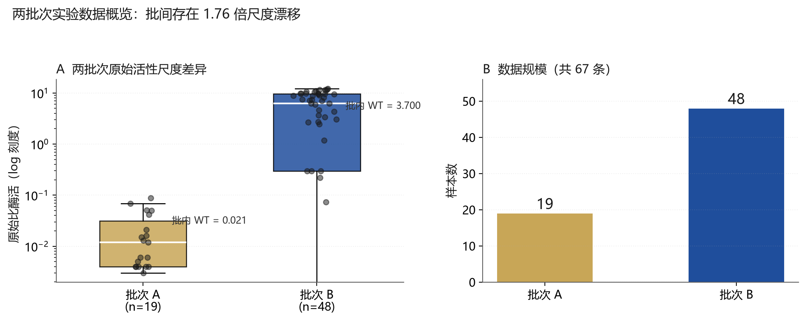
2.2 批内 WT 归一化
解决办法是各批次分别以批内 WT 为基准归一化：activity_rel = 该批实测值 / 该批 WT 实测值。归一化后两批分布回到同一尺度，WT 恒为 1.0，可以直接合并建模。
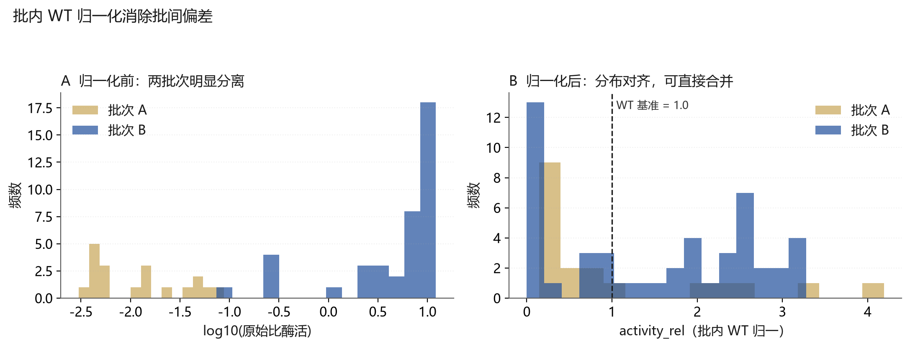
2.3 突变位点分布
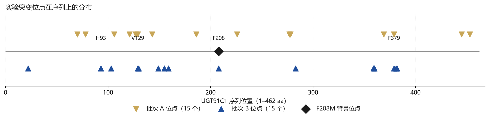
2.4 按位点留出交叉验证（关键协议）
评测协议决定了结论是否可信。本项目冻结以下协议：
Leave-one-site-out CV：对每一个非背景突变位点 p，把"所有在 p 位发生突变的变体"整体作为测试集，其余变体作训练集。一个变体若携带多个突变位点，会在多个折中被预测，取其平均作为样本外预测。
这样做评测的是「模型能否外推到从未见过的突变位点」——这正是"从候选库挑新突变体"的真实场景。随机折会把同一位点的样本同时放进训练与测试，导致分数虚高，因此被明确禁止。
最终评测集为 27 个非背景位点 / 64 个变体；背景位点 208 从评测中剔除，避免"所有变体都带同一个突变"造成的常数效应。
2.5 数据规模与突变数分布
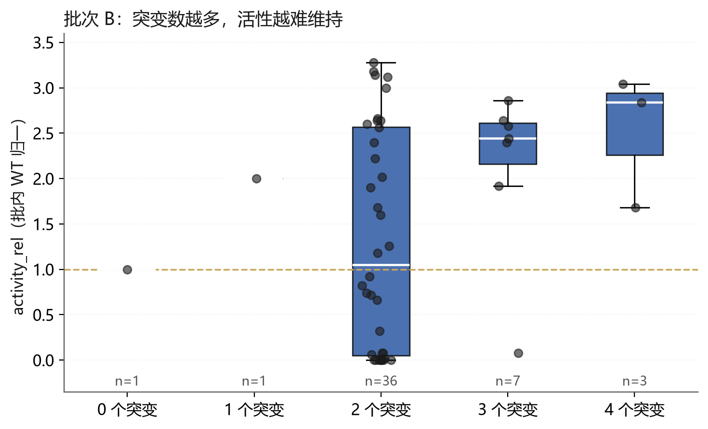
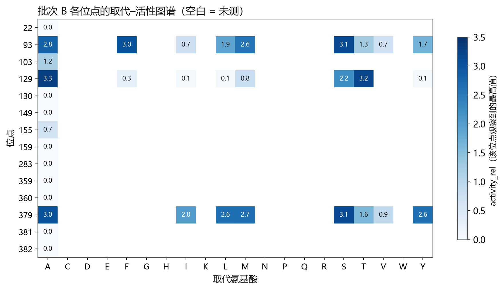
线上基线模型的复现与缺陷定位
在升级方案之前，先确认现有线上模型是否还能正常使用。结论是：模型文件本身已不可用，必须重训。
3.1 缺陷：跨版本加载丢截距
models/xgb_esm.pkl 由旧版 XGBoost 序列化。在当前环境（XGBoost 3.0.5）下加载时会丢失 base_score 截距，导致所有预测值整体偏移约 1.4：实测 activity_rel 均值分别为 1.05 / 1.52，而直接加载预测的均值仅 −0.34 / 0.12。
影响面：平台的预测绝对数值、首页展示的 RMSE 与"准确度"指标均不可信。但排序不受影响——整体平移不改变名次，所以"按名次取前 N"的用法依然有效。为彻底消除隐患，本次在本地以完全相同配方重训模型。
3.2 基线配方
特征：ESM2-t33-650M 全序列 mean-pool 表征（1280 维）+ 23 维领域先验（进化 PSSM、共进化、结构几何、口袋性质、稳定性 ΔΔG） 模型：XGBoost 回归（600 棵树，max_depth 4，lr 0.05） 目标：批内 WT 归一的 activity_rel
3.3 基线在按位点留出下的表现
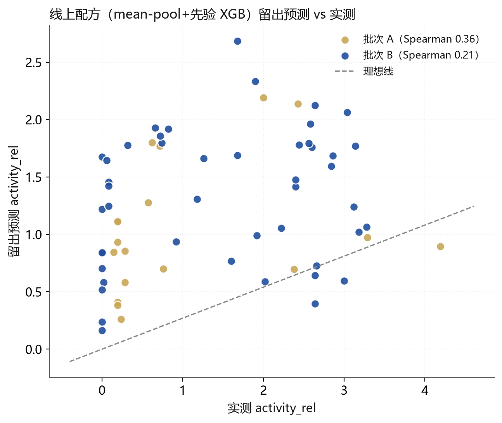
基线在 27 个位点留出评测下取得 macro Spearman 0.287、AUC 0.641。这个水平说明：模型能捕捉一部分信号，但外推到新位点时能力明显衰减——这正是本次方案要解决的问题。
三类冻结特征的构建
在不微调 650M 参数的前提下，提升表征对"突变"这一事件的敏感度。共构造三类特征，全部为冻结特征。
4.1 全序列 mean-pool（基线表征）
对整条突变后序列的残基表征取均值（1280 维）。优点是信息全局、稳定；缺点是单点突变被 462 个残基平均稀释，信号强度低，这也是基线外推能力弱的根本原因。
4.2 突变位点窗口（site-window）
仅在突变位点 ± 2 个残基的邻域内取表征并平均，聚焦局部环境。同时输出剔除背景位点后的版本（site-local），消除所有变体共有的常数项。设计意图是让突变信号不被稀释。
4.3 masked-marginal 零样本进化分数（关键新增）
这是本次最有价值的特征，思路源自 ESM-1v 的零样本突变效应打分：
以野生型序列为模板，把待评估位点替换为 <mask>，让语言模型给出该位点的氨基酸概率分布，然后计算对数几率：
score = log p(突变氨基酸) − log p(野生型氨基酸)
该分数衡量的是"进化过程是否接受这个取代"：分数越高，说明该取代在自然同源序列中越常见，通常越可能保持功能。它完全不依赖任何活性标签，因此不存在小样本过拟合问题，天然适合外推到新位点。本项目同时输出位点分数之和、均值、最小值和仅非背景位点的版本。
4.4 方案对比设计
共评测 6 个方案，覆盖基线、单特征、特征组合与不同浅头：
| 方案 | 特征 | 模型头 | 特征维度 |
|---|---|---|---|
| ZS | 零样本分数（仅非背景位点） | 无（参数无关） | 1 |
| M0（线上配方） | mean-pool + 先验 | XGBoost | 1303 |
| M1 | 零样本 + 先验 | XGBoost | 30 |
| M2 | 位点窗口 + 零样本 + 先验 | 标准化 + PCA(32) + Ridge | 1310 |
| M3 | 位点窗口 + 零样本 + 先验 | XGBoost | 1310 |
| M4 | mean-pool + 位点窗口 + 零样本 + 先验 | 标准化 + PCA(32) + Ridge | 2590 |
按位点留出评测结果
27 个位点留出、64 个变体评测。结论明确：零样本分数胜出，位点窗口表征是负贡献。
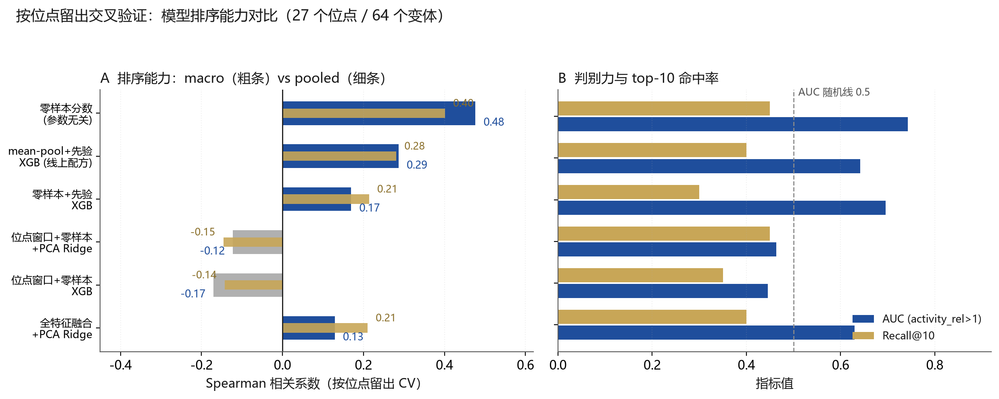
5.1 完整指标表
| 方案 | macro Spearman | pooled Spearman | macro AUC | macro Recall@10 |
|---|---|---|---|---|
| ZS 零样本分数 | 0.477 | 0.401 | 0.742 | 0.450 |
| M0 mean-pool+先验 XGB（线上配方） | 0.287 | 0.281 | 0.641 | 0.400 |
| M1 零样本+先验 XGB | 0.170 | 0.214 | 0.695 | 0.300 |
| M4 全特征融合 PCA+Ridge | 0.129 | 0.210 | 0.630 | 0.400 |
| M2 位点窗口+零样本 PCA+Ridge | −0.123 | −0.146 | 0.463 | 0.450 |
| M3 位点窗口+零样本 XGB | −0.170 | −0.142 | 0.446 | 0.350 |
5.2 三个关键结论
5.3 分批次诊断
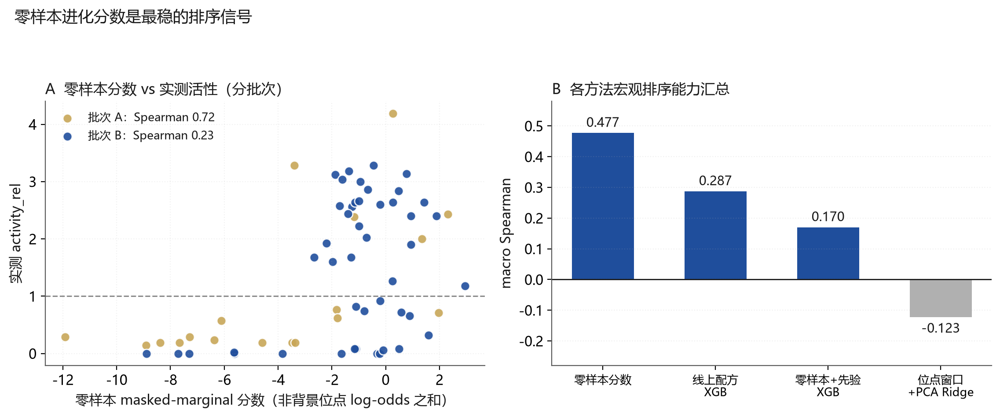
| 数据子集 | 构成 | 零样本分数 Spearman | 说明 |
|---|---|---|---|
| 批次 A | 18 个单点突变 | 0.72 | 零样本分数表现优秀，AUC 达 0.89 |
| 批次 B | 46 个 F208M 组合变体 | 0.23 | 组合突变叠加是当前唯一短板 |
实验室实测数据（Sheet1）验证
用批次 A 的 18 个真实实测单点突变体做样本外验证。模型训练集只使用批次 B 的 48 条数据，不含 Sheet1，因此这是严格样本外预测，可直接与实验真值对比作图。
6.1 预测与实测对比
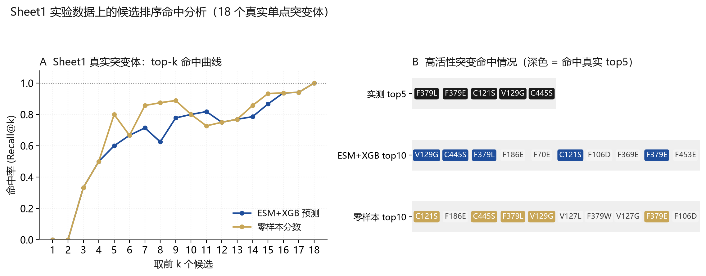
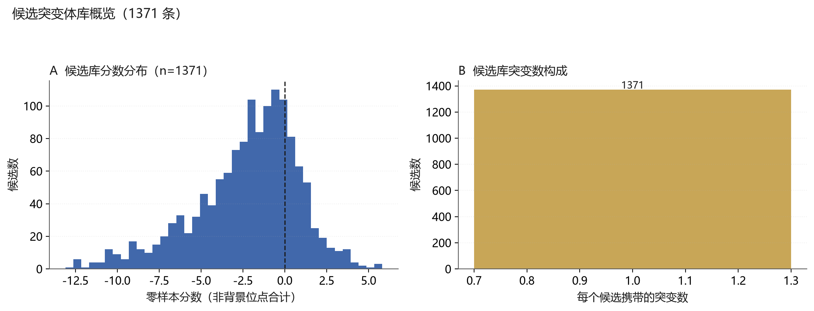
6.2 逐条预测明细
下表为 18 个真实突变体的完整预测结果（WT 作为标定点单列，不参与突变体排名）。
| 突变体 | 实测 activity_rel | ESM+XGB 预测 | 零样本分数 | 实测名次 | 预测名次 | 零样本名次 |
|---|---|---|---|---|---|---|
| F379L | 4.19 | 1.487 | 0.267 | 1 | 3 | 4 |
| F379E | 3.29 | 0.972 | −3.389 | 2 | 10 | 10 |
| C121S | 2.43 | 1.159 | 2.307 | 3 | 6 | 1 |
| V129G | 2.38 | 2.138 | −1.178 | 4 | 1 | 6 |
| C445S | 2.00 | 1.919 | 1.347 | 5 | 2 | 3 |
| WT（标定） | 1.00 | 1.000 | 0.000 | — | — | — |
| F379W | 0.76 | 0.783 | −1.818 | 7 | 14 | 8 |
| F186E | 0.71 | 1.334 | 1.976 | 8 | 4 | 2 |
| V127L | 0.62 | 0.710 | −1.795 | 9 | 16 | 7 |
| F369E | 0.57 | 1.127 | −6.114 | 10 | 8 | 13 |
| F70E | 0.29 | 1.172 | −7.287 | 11 | 5 | 15 |
| F453E | 0.29 | 0.886 | −11.916 | 11 | 11 | 19 |
| V78G | 0.24 | 0.735 | −6.365 | 13 | 15 | 14 |
| V278G | 0.19 | 0.532 | −7.671 | 14 | 19 | 16 |
| V127G | 0.19 | 0.587 | −3.367 | 14 | 17 | 9 |
| F106D | 0.19 | 1.141 | −3.483 | 14 | 7 | 11 |
| F226E | 0.19 | 0.835 | −4.590 | 14 | 12 | 12 |
| Y277R | 0.19 | 0.810 | −8.378 | 14 | 13 | 17 |
| V143G | 0.14 | 0.562 | −8.915 | 19 | 18 | 18 |
6.3 验证结论
候选突变体库排序
把最优排序器应用到候选库：1371 条候选，按零样本分数（剔除背景位点后）降序排列，输出可直接使用的排名表。
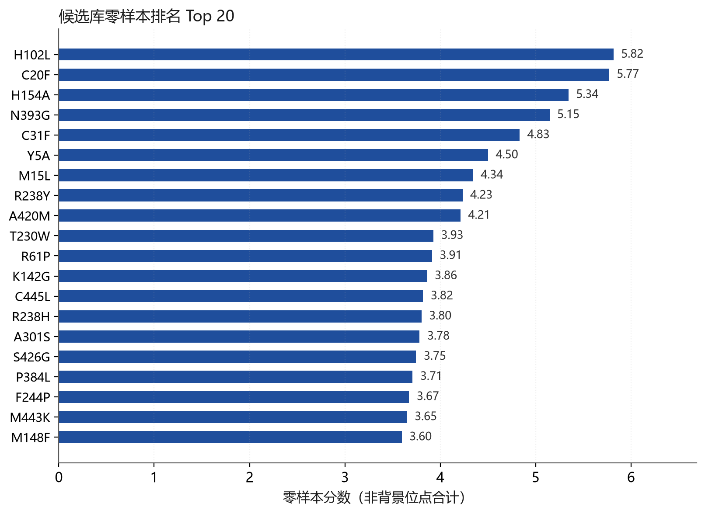
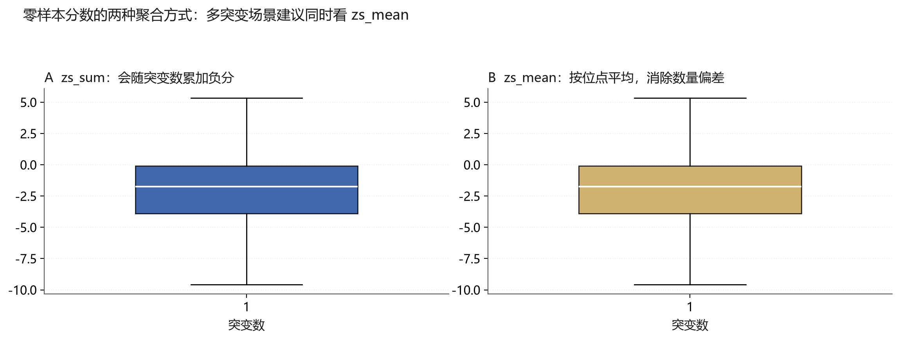
zs_sum 对多突变体不公平（突变越多、负分累加越多），因此排名表前列几乎全是单突变体。若目标是筛选多突变组合，请改用 zs_nonbg_mean 列排序，或对 zs_sum 做突变数归一化。
输出文件
| 文件 | 内容 | 行数 |
|---|---|---|
results/zeroshot_candidate_ranking.csv | 候选库按零样本分数降序排名，含 zs_sum / zs_nonbg_sum / zs_min / zs_mean / zs_nonbg_mean 多列 | 1371 |
results/sheet1_predictions.csv | Sheet1 实验突变体的样本外预测与三套名次 | 19 |
results/tier_cv_metrics.csv | 六组方案的按位点留出评测指标汇总 | 6 |
results/tier_oof_predictions.csv | 各方案的样本外（OOF）预测明细 | 64 |
结论、局限与下一步
8.1 主要结论
- 数据协议是前提。两批次数据存在 1.76 倍尺度漂移，必须按批内 WT 归一化后合并；评测必须用按位点留出，随机折会虚高泛化能力。
- 零样本进化分数是最稳的排序信号。在 27 个位点留出评测下 macro Spearman 0.477、AUC 0.742，优于线上配方（0.287 / 0.641），且不消耗任何标签。
- 位点窗口表征在当前数据量下无效甚至有害。M2/M3 的 Spearman 为负，原"聚焦局部环境"的假设未获支持。
- 小样本下加训练头会损伤排序能力。把零样本分数交给 XGBoost 训练后（M1），表现从 0.477 掉到 0.170。
- 模型可用于候选筛选。在 Sheet1 的 18 个真实突变体上，前 10 名候选覆盖全部 5 个高活性突变体。
- 线上模型文件必须重训。旧版序列化的
xgb_esm.pkl在当前 XGBoost 下丢失截距，预测整体偏移约 1.4，平台显示的精度指标不可信。
8.2 明确局限
- 组合突变预测是短板：批次 B（46 个 F208M 组合变体）的零样本 Spearman 仅 0.23。
- 预测绝对值不可用：实测 4.19 的突变体预测仅 1.49，存在系统性压缩，且批次标定差异尚未完全消除。
- 样本量小：67 条数据下，任何在 1280 维表征上训练的模型都难以稳定收敛，这也是零样本方案胜出的根本原因。
8.3 后续建议（按优先级）
xgb_esm.pkl，修复平台首页的 RMSE / 准确度显示，并明确标注"仅按名次使用"脚本清单与复现步骤
全部脚本为新增文件，不改动既有线上代码。按顺序执行即可复现本报告全部结论。
| 步骤 | 脚本 | 作用 | 产出 |
|---|---|---|---|
| 1 | scripts/build_dataset.py | 合并两批次、批内 WT 归一化、自动识别背景位点 | data/train_dataset.csv |
| 2 | scripts/extract_features_v2.py | 抽 ESM2-650M 的 mean-pool / 位点窗口 / 零样本分数 | data/feat_*.npy |
| 3 | scripts/train_eval_v2.py | 按位点留出 CV，对比六组方案 | results/tier_cv_metrics.csv |
| 4 | scripts/predict_sheet1.py | 用线上同配方重训并对 Sheet1 做样本外预测 | results/sheet1_predictions.csv |
| 5 | scripts/score_candidates_zeroshot.py | 用零样本分数对候选库排序 | results/zeroshot_candidate_ranking.csv |
| 6 | scripts/plot_sheet1_comparison.py | Sheet1 预测对比图 | PNG |
| 7 | scripts/make_report_figures.py | 本报告全部 12 张图 | results/figures/*.png |
执行命令
python scripts/build_dataset.py
python scripts/extract_features_v2.py
python scripts/train_eval_v2.py
python scripts/predict_sheet1.py
python scripts/score_candidates_zeroshot.py
python scripts/make_report_figures.py
运行环境
- Python 3.13 · PyTorch 2.9（CUDA）·
esm预训练权重已本地缓存（esm2_t33_650M_UR50D） - XGBoost 3.0.5 · scikit-learn · pandas · numpy · matplotlib
- 注意：一次只运行一个模型任务，避免算力争抢